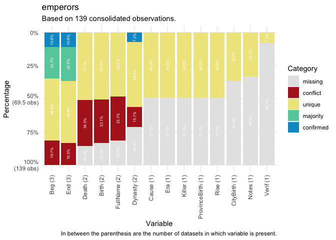

manydata is the central package in the many packages universe aimed at collecting, connecting, and correcting network data across issue-domains of global governance. To assist users in doing so, manydata contains functions that enable users to download and manipulate data easily.
Why manydata?
manydata offers users access to all of the tested data in the various ‘many packages’ available, for use in analyses of global governance and beyond. A special feature of the ‘many packages’ is that it is not ‘opinionated’ - instead of offering a single, supposedly authoritative version of global governance events, the packages in the many packages universe gather well-regarded datasets in each issue-domain into three-dimensional ‘datacubes’. The chief advantage of this for global governance researchers is that it enables a quick and easy way to check the robustness of their results using different formulations of the study population or concept specification. The ‘datacube’ structure has a specific coding system for the variables across the datasets. For more details, please see the vignette.
Downloading and installing manydata
The easiest way to install manydata is directly from CRAN.
install.packages("manydata")The development version of the package manydata can also be downloaded from GitHub.
# install.packages("remotes")
remotes::install_github("globalgov/manydata")Available ‘many’ packages
manydata connects users to other packages that help fill global governance researchers’ data needs. The get_packages() function can be used to discover the ‘many packages’ currently available.
Please see the website for more information about how to use manydata.
Visualising ‘many’ databases
Once ‘many’ data packages are downloaded, manydata helps users visualize the relationship between matched observations across datasets within a database. Database profiling functions return confirmed, unique, missing, conflicting, or majority values in all (non-ID) variables in the datasets for a ‘many’ package database.
db_plot(database = emperors, key = "ID", variable = "all", category = "all")#> There were 116 matched observations by ID variable across datasets in database.
Consolidating ‘many’ databases
manydata also contains flexible methods for consolidating ‘many’ package database into a single dataset with some combination of the rows, columns, as well as for how to resolve conflicts for observations across datasets.
consolidate(database = emperors, rows = "every", cols = "every",
resolve = "coalesce", key = "ID")#> There were 116 matched observations by ID variable across datasets in database.
#> # A tibble: 41 × 3
#> ID Beg End
#> <chr> <mdate> <mdate>
#> 1 Aemilian 0253-08-15~ 0253-10-15~
#> 2 Augustus -0026-01-16 0014-08-19
#> 3 Aurelian 0270-09-15 0275-09-15
#> 4 Balbinus 0238-04-22 0238-07-29
#> 5 Caracalla 0198 0217-04-08
#> 6 Carinus 0283-08-01~ 0285-08-01~
#> 7 Carus 0282-10-01~ 0283-08-01~
#> 8 Claudius 0041-01-25 0054-10-13
#> 9 Commodus 0177 0192-12-31
#> 10 Constantine II 0337-05-22 0340-01-01
#> # … with 31 more rowsCheat Sheet
manydata contains several other functions to help global governance researchers. For a quick overview, please also check the package cheat sheet.

Contributing to the many packages universe
For more information for developers and data contributors to ‘many packages’, please see {manypkgs} the website.